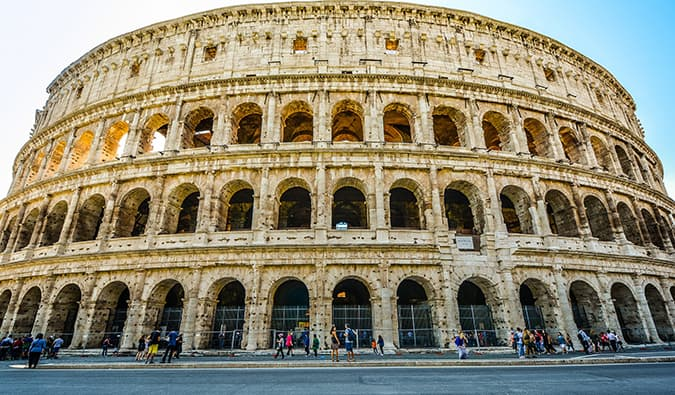

The Great Wall of China
The Great Wall of China consists of numerous walls and fortifications, originally conceived by Emperor Qin Shi Huang in the third century BC. The most famous sections were built during the Ming dynasty. Despite its failure to keep invaders out, it remains a monumental engineering feat.

The Taj Mahal
Built in the 1600s, the Taj Mahal in Agra, India, is a magnificent white marble tomb constructed by Emperor Shah Jahan for his beloved wife. It’s a UNESCO World Heritage site and one of the New Seven Wonders of the World.

Machu Picchu
Located in Peru, Machu Picchu is a high-altitude Inca city, rediscovered in 1911. It is renowned for its historical significance and stunning location, having been named one of the New Seven Wonders of the World in 2007.

The Pyramid of Giza
Over 3,000 years old, the Pyramids of Giza are an architectural marvel with their precise construction and alignment with the stars. The Great Pyramid was built by Pharaoh Khufu and remains one of the most iconic ancient structures.
Stonehenge
This megalithic structure in England is over 3,000 years old. The purpose of Stonehenge remains a mystery, and its construction techniques are still debated, adding to its intrigue.

The Colosseum and Forum
Located in Rome, Italy, the Colosseum and Forum are remnants of the Roman Empire's grandeur. The Colosseum hosted gladiatorial games, while the Forum was the center of Roman public life.

The Parthenon
This ancient temple in Athens, Greece, dedicated to the goddess Athena, symbolizes the power of Athens and Greek civilization. Despite ongoing restoration efforts, the Parthenon remains a stunning historical site.

Easter Island
Easter Island, Chile, is famous for its Moai statues, large stone heads created by the island's original inhabitants. These statues offer a glimpse into the island's mysterious past.
The Alhambra
The Alhambra in Granada, Spain, is a stunning example of Moorish architecture. Its beautiful gardens, palaces, and fortresses have captivated visitors for centuries.
Sukhothai
Located in north-central Thailand, Sukhothai was once the capital of Thailand. Its extensive historical site includes numerous temples and showcases unique architectural styles influenced by Khmer and Sri Lankan traditions.